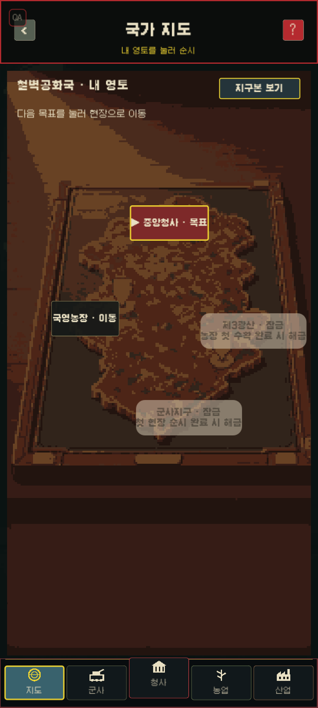
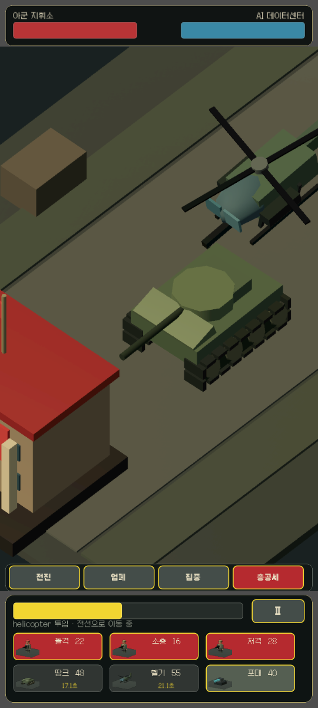

결재와 이야기
서로 다른 보고를 읽고 한 가지 결정을 내립니다. 그 선택은 다음 대화와 사건의 이유가 됩니다.

Project K · 현재 개발 중
AI가 세계를 운영하는 2187년. 마지막 폐쇄국의 신임 지도자가 되어 선전과 현실 사이를 관리하세요. 농장을 살리고, 현장을 순시하고, 외교와 전쟁을 결정합니다. 가볍게 내린 선택도 예상하지 못한 이야기로 돌아옵니다.


Your country · Your consequences
숫자를 올리는 데서 끝나지 않습니다. 보고서에 남긴 결정은 현장의 표정과 새로운 사건으로 되돌아옵니다.
서로 다른 보고를 읽고 한 가지 결정을 내립니다. 그 선택은 다음 대화와 사건의 이유가 됩니다.
농장과 광산, 순시 현장으로 나가 선전 속 숫자가 실제로 움직이는지 직접 확인합니다.
좋아하는 분야를 집중적으로 키우고 장비와 풍경이 달라지는 성장을 눈으로 확인합니다.
외교와 정보, 갈등 속에서 다른 국가와 관계를 만들고 자신의 나라가 남긴 기록을 겨룹니다.
Real client captures
아래 이미지는 연출용 목업이 아니라 현재 Project K 클라이언트에서 직접 촬영한 실제 화면입니다.



Working title · In development
Project K는 현재 작업명입니다. 공개 일정은 정하지 않았으며, 완성도를 우선해 개발합니다.